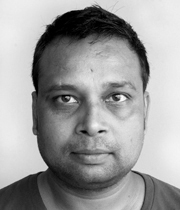

PhD (2017) Human-Computer Interaction with a minor in Industrial Design, Georgia Institute of Technology.
Aman Parnami recently received a PhD in Human-Computer Interaction with a minor in Industrial Design from the Georgia Institute of Technology. He also has a Masters in HCI from the same institute and a dual degree in CSE from IIT Bombay. His research interests include the development of rapid prototyping tools for novel wearable interactions and devices and he is also involved in the design of constructionist learning environments for CS courses.
 About Us
About Us


With an increased focus on user experiences and interfaces in the world, the importance of HCI, Interaction Design, and Design Thinking have also increased rapidly in IT-based products and services. New and Digital media is at the heart of many aspects of design, as well as areas like social media, gaming, and virtual/augmented reality.
As a result, IIIT Delhi has, in conjunction with TCS, decided to open the Centre for Design and New Media, a Research Centre dedicated to working on leading research and emerging areas of Design and New Media. This Centre is headed by leading researchers and experts from around the world and regularly works with people in the industry to learn about the developments in these fields. To learn more about the people who are a part of this Centre, Click Here!
Our Vision
CDNM’s Mission consists of three main goals -
1) Have a world-class research program in different aspects of Design and New Media
2) Develop the next generation of engineers for industry sectors like IT product/services design, animation, gaming, virtual reality, etc.
3) Engage actively with industrial partners for collaborative innovation and for strengthening the ecosystem in the country in these fields.
The Centre will also choose some domains/sectors to which it can apply the results of its efforts and R&D. Initially, the domain areas are Education, Healthcare, Transportation, and Digital Governance. For such domains the Centre will work closely with social bodies such as NGOs, Schools, Hospitals, etc. to co-create innovative design and media solutions for existing problems.Here!
 Our Team
Our Team
Aman Parnami
Assistant Professor (DES, CSE)
Assistant Professor (DES, CSE)

Ojaswa Sharma
Assistant Professor (CSE)
Assistant Professor (CSE)

PhD (2017) Human-Computer Interaction with a minor in Industrial Design, Georgia Institute of Technology.
Aman Parnami recently received a PhD in Human-Computer Interaction with a minor in Industrial Design from the Georgia Institute of Technology. He also has a Masters in HCI from the same institute and a dual degree in CSE from IIT Bombay. His research interests include the development of rapid prototyping tools for novel wearable interactions and devices and he is also involved in the design of constructionist learning environments for CS courses.
Aman Parnami recently received a PhD in Human-Computer Interaction with a minor in Industrial Design from the Georgia Institute of Technology. He also has a Masters in HCI from the same institute and a dual degree in CSE from IIT Bombay. His research interests include the development of rapid prototyping tools for novel wearable interactions and devices and he is also involved in the design of constructionist learning environments for CS courses.
Pushpendra Singh
Head (HCD), Associate Professor (CSE, HCD)
Head (HCD), Associate Professor (CSE, HCD)

PhD (2004), Inria-Rennes, Université de Rennes 1, France
Pushpendra completed his PhD. In 2004 from Inria-Rennes, France in the area of mobile computing. He worked at Portsmouth University, Newcastle University, and Inria-Rocquencourt before IIIT-D. His primary research interest areas are mobile systems and applications, middleware, and ICT for Development. His work has been successfully transferred to Industry in the past leading to creation of start-ups and new products. His research is funded by DEiTY, ITRA, DST, DRDO, CEFIPRA etc.
Rajiv Ratn Shah
Assistant Professor (CSE, DES)
Assistant Professor (CSE, DES)
PhD(2017) in computer science from the National University of Singapore, Singapore
Rajiv Ratn Shah received his PhD in computer science from the National University of Singapore, Singapore. He received his MTech and MCA degrees in computer applications from the Delhi Technological University, Delhi and Jawaharlal Nehru University, Delhi, respectively as well as his BSc in Mathematics (Honors) from the Banaras Hindu University, Varanasi. Dr Shah is the recipient of several awards, including the prestigious European Research Consortium for Informatics and Mathematics (ERCIM) Fellowship and runner-up in the Grand Challenge competition of ACM International Conference on Multimedia.
Timothy Scott Moyers Jr.
Assistant Professor (DES)
Assistant Professor (DES)
PhD, Electroacoustic Composition and Multi-Channel Audio, University of Birmingham (England)
Dr. Tim Moyers is a composer and audiovisual artist from Chicago. He completed his PhD in Electroacoustic Composition and Multi-Channel Audio from the University of Birmingham (England), an MM in New Media Technology from Northern Illinois University (USA), a BA in Jazz Performance and a BA in Philosophy from North Central College (USA).
Anoop Ratn
Visiting Faculty
Visiting Faculty

BFA, Mahatma Gandhi Kashi Vidhyapeeth, Varanasi. Animation Film Making, Gaming, Concept Arts
Drishti Sharma
Visiting Faculty
Visiting Faculty

MD in Community Medicine from MAMC, New Delhi and Senior Residency from PGIMER, Chandigarh. Cyberbullying, social and emotional well-being, and implementation science.
Manohar Khushalani
Visiting Faculty
Visiting Faculty

Bacherlor in Civil Engineering from BITS Pilani Courses on 3D Modelling and Finite Element analysis from IIT, Delhi Former Director, Environment and Sociology, at the National Water Academy, Khadakwasla, & Member Secretary, National Environmental Monitoring Committee for River Valley Projects
Indrani De Parker
Visiting Faculty
Visiting Faculty

PhD (per.), Design Education in 21st Century India, IIT, Mumbai Indrani De Parker is an alumnus of the National Institute of Design (NID), Ahmedabad. She is a communication designer and design educator.
Vibha Narula Gupta
Visiting Faculty
Visiting Faculty
PhD (per.), Design Education in 21st Century India, IIT, Mumbai Indrani De Parker is an alumnus of the National Institute of Design (NID), Ahmedabad. She is a communication designer and design educator.
Labs
At Grit, we work on solving problems faced in our everyday lives as a result of environmental factors by proposing design solutions. Our work is vast and covers most fields of work. The work is done in conjunction with organisations such as DEiTY, ITRA, DST, DRDO, CEFIPRA etc. Our work has been deployed in the field for various projects those related to national schemes such as NRHM (National Rural Health Mission) and NREGS (National Rural Employment Guarantee Scheme).

The Graphics Research Group (GRG) works on cutting edge research problems in computer graphics and computational geometry. Our primary focus areas are Virtual and Mixed reality (VR/MR), volume rendering, and 3D geometric reconstruction. Machine learning and GPU computing are integral parts of our research within these fields.

MIDAS is a group of researchers at IIIT-Delhi who study, analyze, and build different multimedia systems for society leveraging multimodal information. MIDAS stands for Multimodal Digital Media Analysis Lab and it is founded by Dr. Rajiv Ratn Shah. Dr. Shah is assistant professor in the department of Computer Science and Engineering (jointly appointed with the department of Human Centered Design) at IIIT-Delhi. Our work at MIDAS includes Machine Learning, Multimedia Content Processing, Natural Language Processing, Image Processing, Multimodal Computing, Data Science, Social Media Computing, and the Internet of Things. We believe in multidisciplinary collabrative research and work closely with eminent researchers from National University of Singapore (NUS), National Institute of Informatics (NII), Nanyang Technological University (NTU), Bloomberg, Arkana Lab, etc.
At Weave Lab we weave interactivity into everyday objects and experiences. We envision as well as discover through critical observations new opportunities for human-computer interactions. Through our extensive research on material and technologies, we prototype manifestations of our ideas, which we then iteratively improve. Our applied research approach interweaves basic research with which we contribute to the advancement of the technologies we leverage.

Iliad is a Multimedia focused lab which works on research and design in cutting edge multimedia and sound related work. The most recent work is based off of a 3D audio model which allows the user to hear sounds as though they are appearing all around them. The work of this lab is heavily linked to the fields of Virtual Reality and Game Development as well with tie-ups for competitions with multiple organisations from the Industry. Our work is also done in conjunction with leading audio visual specialists from around the world.
Projects
Contact Us